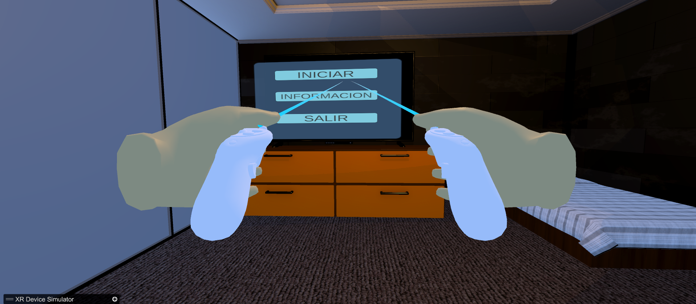
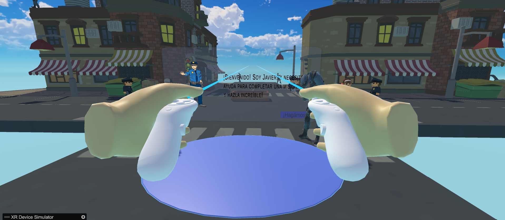
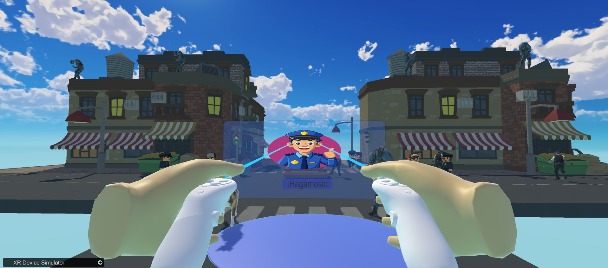
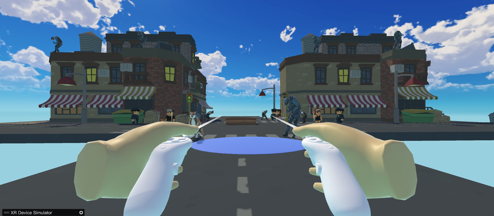
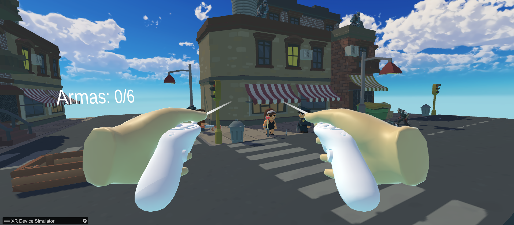
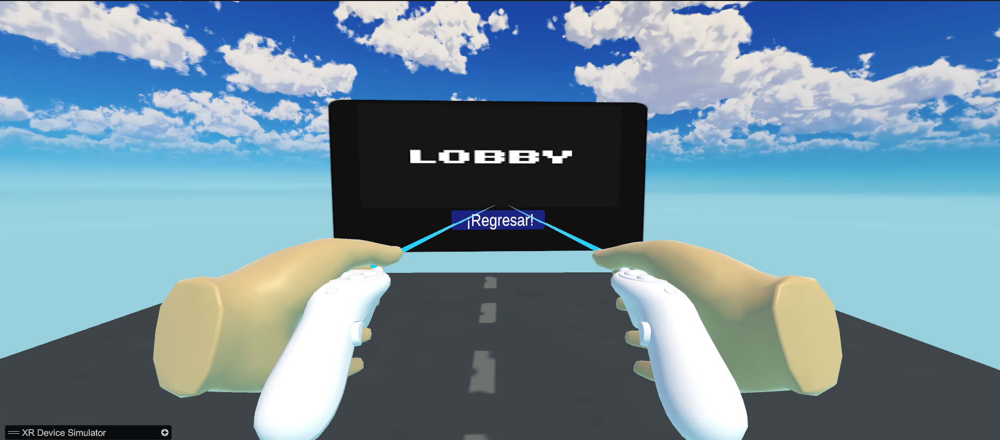
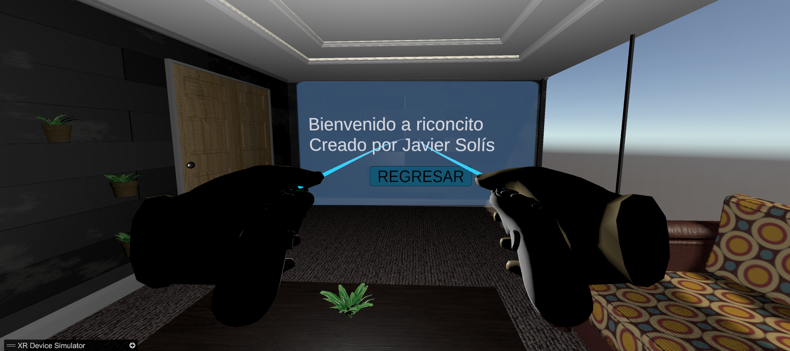

Simulación inmersiva en realidad virtual enfocada en la exploración urbana, interacción con PNJs y mecánicas de recolección de objetos en tiempo real.
Armory VR es una experiencia interactiva desarrollada en Unity utilizando el marco de trabajo de XR Interaction Toolkit. El usuario se sumerge en un entorno urbano tridimensional donde interactúa con personajes de la ciudad, navega entre diferentes escenarios y cumple el objetivo táctico de recolectar un total de 6 armas distribuidas en el mapa para depositarlas en contenedores seguros.
Unity, C#, XR Interaction Toolkit y XR Device Simulator
Realidad Virtual
Simulación interactiva / Videojuego VR

Menú Principal Interactivo

Sistema de Misión y Diálogo con PNJ

Confirmación e Inicio de Misión

Entorno Urbano 3D

Mecánica de Recolección (Contador de Armas 0/6)

Interfaz de Retorno al Lobby

Zona de Créditos